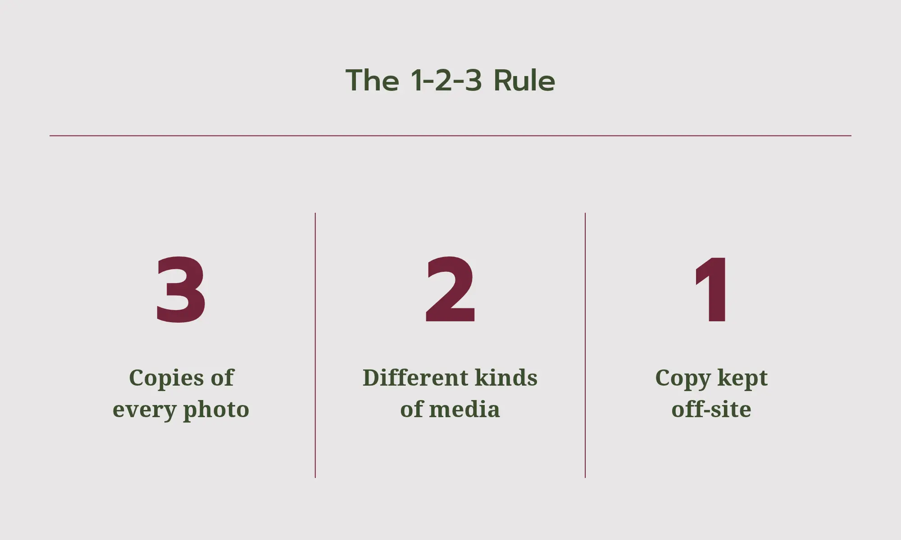
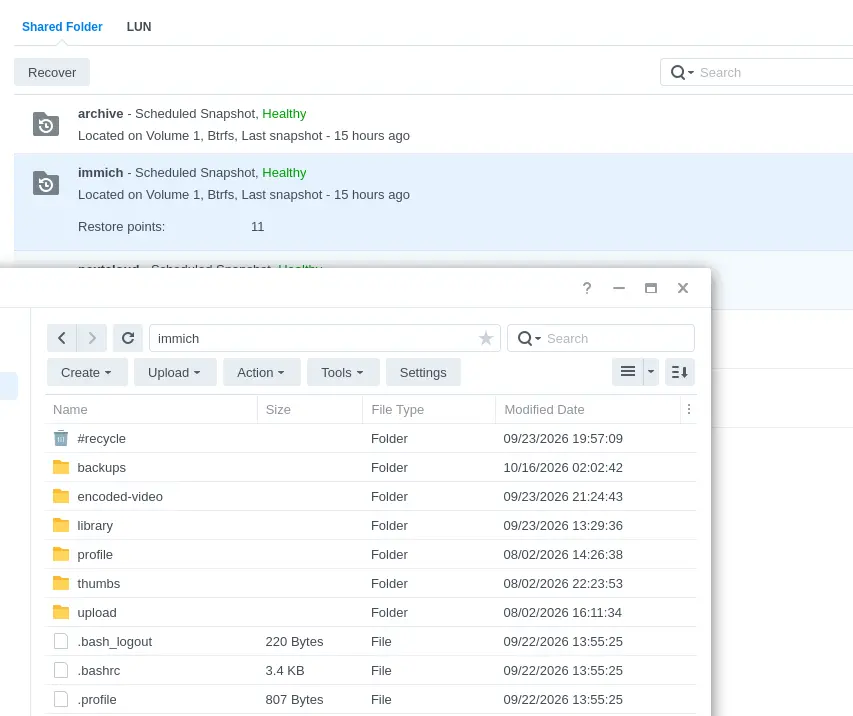

The 1-2-3 rule
There is one universal guideline to keep your data safe: the 1-2-3 rule. Even the Immich docs themselves reference it. At states that you should at all times have 3 copies of your files, on 2 different kinds of storage, with 1 copy located off-site. In practice this means: the original file on the server, a copy on a drive you back up to now and then, and a third copy somewhere else entirely.
Think about a friend’s house or a cloud service, with the latter not being recommended when the whole purpose of this project is to get away from cloud services. Keeping a copy off-site secures your data from, say, a burglary or (god forbid) a house fire.

What to back up
The Immich server saves files in two separate places: the library files (a.k.a. the photos and videos themselves) and the database, which holds all the metadata. This metadata is how Immich separates all your files. It holds your albums, dates, edits and file names.
By default Immich automatically backs up this database to your library daily, meaning backups should only consist of your library folder, though this is important to check in the Immich dashboard.
Automate it
The only backups that are helpful are the ones you actually make and forgetting to make them is what eventually leads to data loss. Automating this process is a must for productions environments.
You can set up a nightly script or a sync tool to back up to a remote location on an interval and never have to worry about it. Immich’s own docs have a ready-made script for this exact purpose. The goal is a backup that happens whether or not you're thinking about it.

Test your backup
A backup that you cannot restore is not a backup. Take time to spin up a new server on another machine or a VM and try restoring your backup. Making sure your backups are effective is really important as finding out your backups are bad after a drive failure is too late.
Also keep in mind that RAID is not a backup. Mirroring two drives is a great way of negating drive failures, but it does not protect you from an accident, theft or a house fire. Treat a mirror as a single copy.